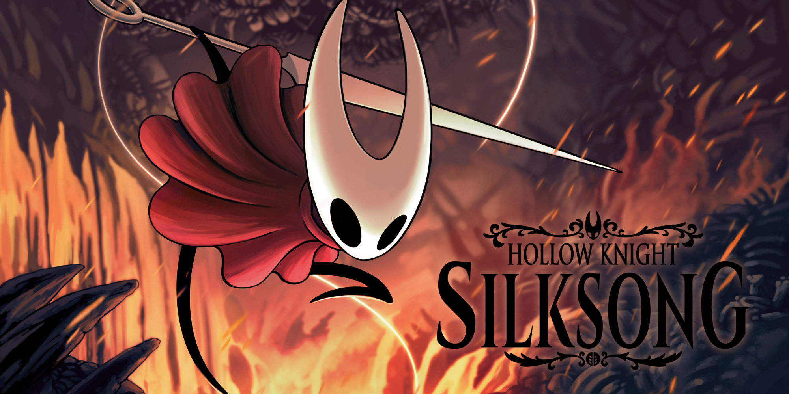

HOLLOW KNIGHT:SLIKSONG
Pasa el tiempo y Hollow Knight: Silksong sigue sin aparecer en nuestras vidas. El metroidvania de Team Cherry se resiste a dar la cara desde su presentación para PC y Nintendo Switch. Queremos encarnar a Hornet cuanto antes, pero el equipo de desarrollo se está tomando su tiempo para lanzar definitivamente la obra. Por ello, vamos a recopilar toda la información que conocemos hasta el momento de Hollow Knight: Silksong. Aquí encontraréis rumores, información oficial, tráilers e imágenes para que tengáis claro en qué momento exacto nos encontramos del desarrollo del título.
- Fecha de lanzamiento:
El Xbox & Bethesda Games Showcase nos ofreció muchas pistas en este sentido. Actualmente no tenemos una fecha de lanzamiento exacta para Hollow Knight: Silksong, y se ha caído la promesa de Microsoft de que llegaría antes de junio de 2023. Hace más de tres años que fue anunciado por primera vez y desde entonces la información sobre su llegada había rodeada de una niebla de misterio.
Su anterior juego: Hollow Knight tuvo tan buena acogida que lo que en principio iba a ser un DLC se ganó el puesto como título independiente. En Silksong recorreremos el reino de Pharloom bajo la atenta mirada de Hornet, la princesa de Hallownest y una letal cazadora. Su misión será la de escapar de su encierro y averiguar qué está sucediendo en una tierra que no es totalmente desconocida. No parece que vayamos a tener novedades espectaculares en Hollow Knight: Silksong, sino que será más ración de lo mismo. Estamos hablando de un Action RPG de scroll lateral con toques de Souls, ya que cada enfrentamiento es un desafío por sí mismo. Por supuesto, no podemos olvidarnos de inolvidables jefes que nos pondrán las cosas realmente difíciles. Entre ellos encontraremos a Seth, un jefazo que rinde homenaje a un fan. En total, el bestiario estará conformado por más de 150 criaturas.
Christian Solis Lara